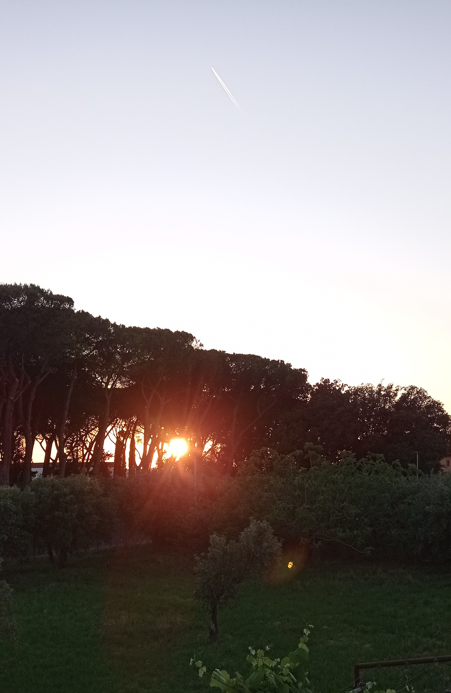
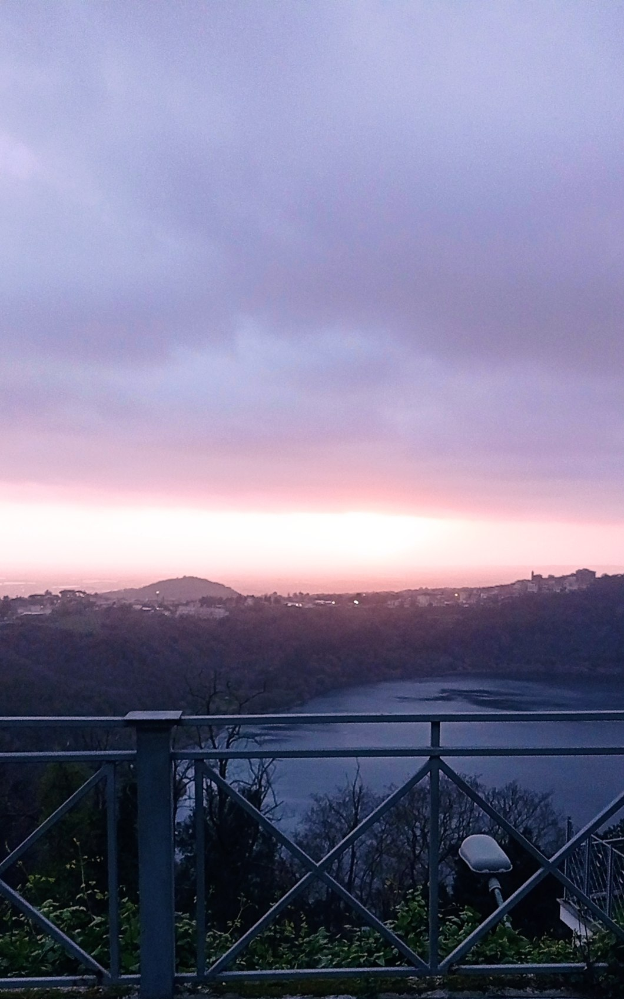
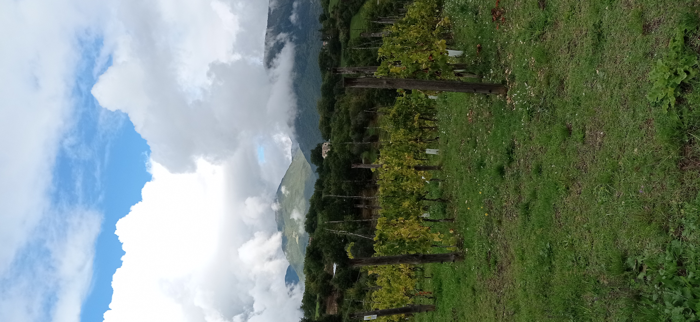
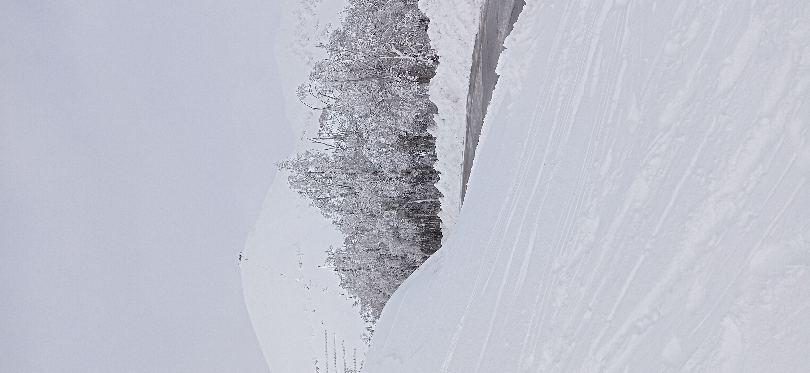
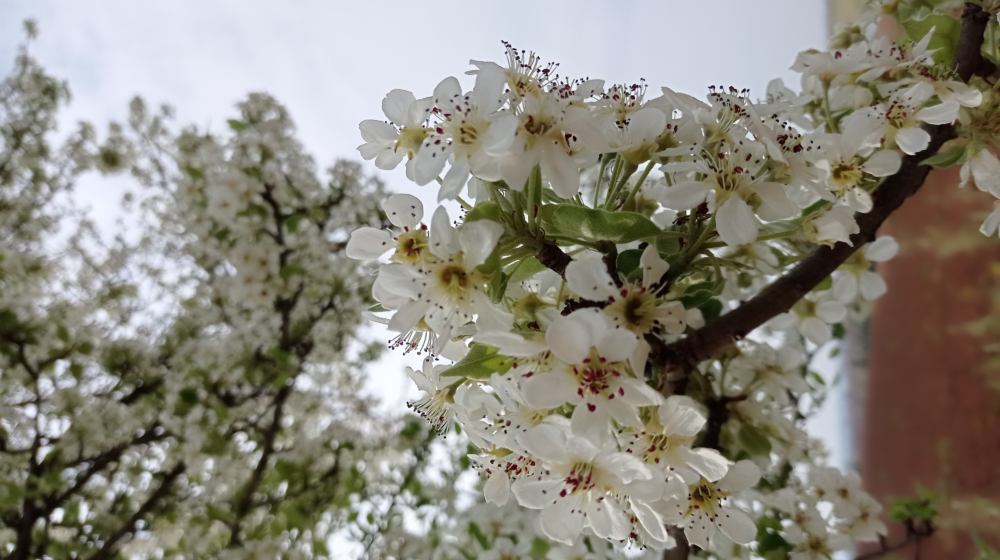
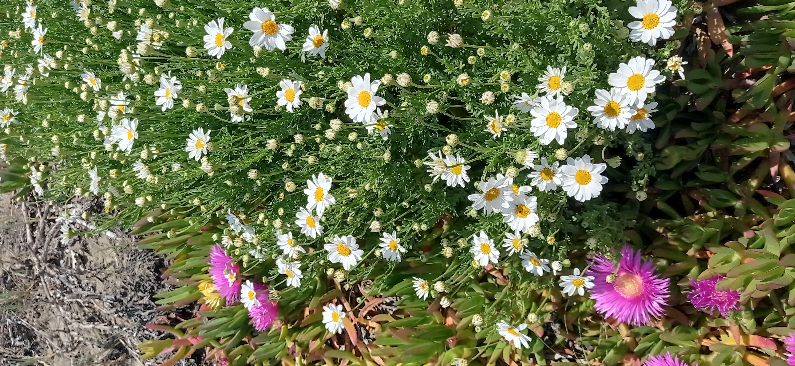
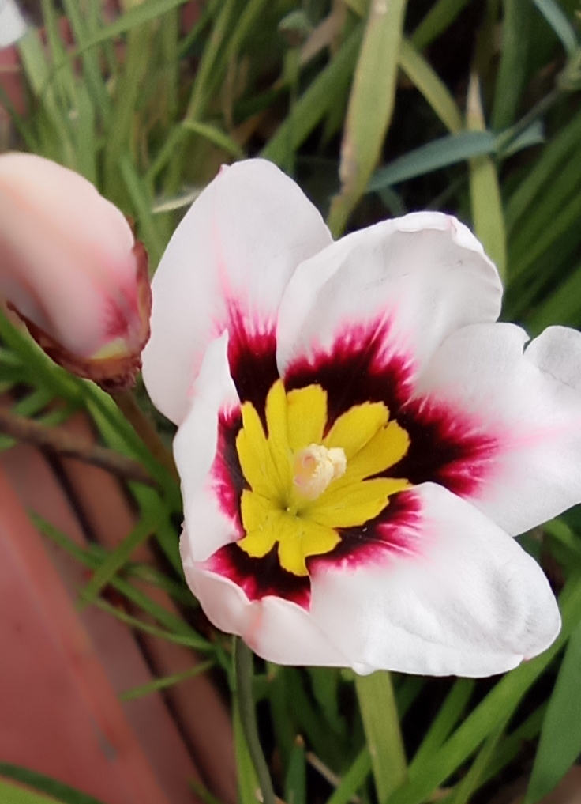

In questo spazio condivido alcune delle mie fotografie più significative, accompagnate da pensieri, emozioni e riflessioni che mi ispirano ogni giorno. È il mio modo di unire la tecnologia alla poesia della vita.
🌅 Oltre il Velo del Tramonto
Adoro osservare come il cielo cambi colore lentamente. Fotografare i tramonti è un modo per fermare il tempo, anche solo per un istante.
Le mie foto non sono le classiche immagini da cartolina. In una, il sole si nasconde dietro una fila di pini, lasciando solo intuire la sua presenza.
Un'altra è scattata da un balcone con vista su uno scorcio del lago di Nemi, Genzano, mentre il tramonto si perde dietro nuvole scure verso il mare.
La terza è forse la mia preferita: un tramonto visto attraverso l’oblò di una nave. L’oblò era sporco, forse di salsedine, ma proprio quella patina rende lo scatto ancora più poetico e vero.
Come nella vita, anche nella fotografia a volte c’è qualcosa che sembra oscurare la luce: una nuvola, un vetro appannato, un velo di tristezza o preoccupazione.
Ma è proprio allora che i colori ci sorprendono di più. I colori sono meravigliosi, bisogna solo imparare a scoprirli… anche quando sembrano nascosti.



🌄 Scoprendo i Paesaggi Montani
Durante una passeggiata in montagna ho immortalato alcune viste mozzafiato. Le nuvole che accarezzano le vette sono qualcosa di magico.
Ogni scorcio racconta un’emozione diversa, sospesa tra il silenzio della natura e il respiro lento della terra.

I filari si aprono verso l’orizzonte, mentre le nuvole abbracciano le cime.

Tra i rami carichi di frutti, si intravede un piccolo borgo che profuma di storia.

Una strada silenziosa accompagna il passo, tra alberi spogli e vette innevate.
🌸 I Fiori di Primavera
In ogni piccolo fiore c'è un'esplosione di colori, un tripudio che nessun pennello o tecnologia umana potrà mai davvero riprodurre.
Osservare e fotografare i fiori è per me un modo per entrare in connessione con la bellezza più autentica della natura.
In questo post condivido alcuni scatti che ho realizzato in momenti speciali: un pero selvatico in fiore durante una camminata , margherite sbocciate sulla sabbia di una spiaggia , e infine l'elegante Sparaxis che sembra dipinta a mano.


